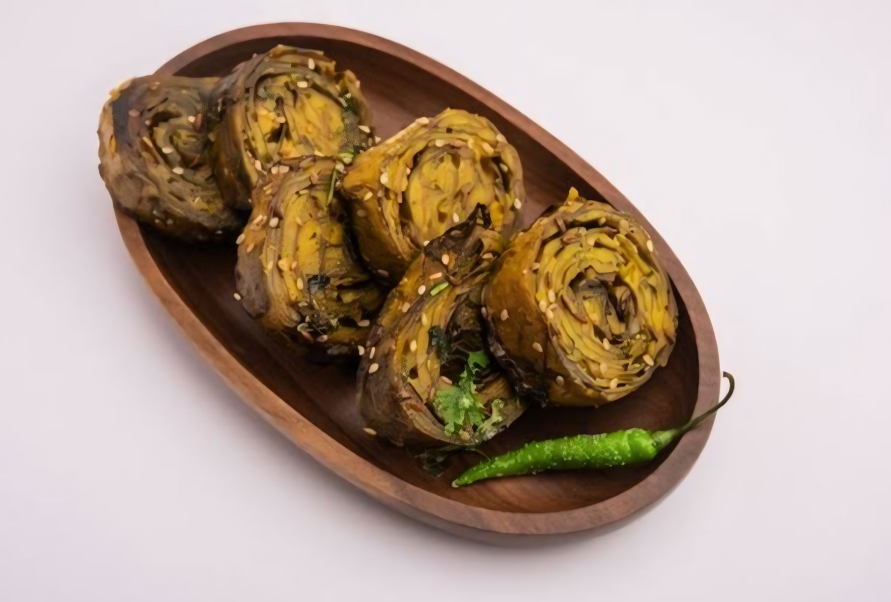

Patra Recipe
Patra, also known as Alu Vadi or Pateria, is a popular Gujarati delicacy made from colocasia leaves (also known as taro leaves) and gram flour (besan). This dish is characterized by its savory, tangy, and slightly sweet flavor profile, combined with the earthiness of the colocasia leaves. Patra is enjoyed as a snack, appetizer, or side dish, and it pairs perfectly with tangy chutneys or a cup of hot tea.
Ingredients:
- 8-10 colocasia leaves (medium-sized)
- 1 cup gram flour (besan)
- 2 tablespoons rice flour (optional, for crispiness)
- 1 teaspoon turmeric powder
- 1 teaspoon red chili powder
- 1 teaspoon coriander powder
- 1 teaspoon cumin powder
- 1 teaspoon ginger paste
- 1 teaspoon green chili paste (adjust to taste)
- 1 tablespoon tamarind pulp
- 1 tablespoon jaggery or sugar
- Salt to taste
- Water, as needed
- 2 tablespoons oil
- 1 teaspoon mustard seeds
- A pinch of asafoetida (hing)
- Freshly grated coconut (optional, for garnish)
|
 |
Instructions:
- Preparation of Colocasia Leaves:
- Wash the colocasia leaves thoroughly under running water to remove any dirt.
- Trim the stems and veins from the backside of the leaves using a knife or kitchen scissors. Ensure that the leaves are cleaned properly.
- Prepare the Batter:
- In a mixing bowl, combine gram flour, rice flour (if using), turmeric powder, red chili powder, coriander powder, cumin powder, ginger paste, green chili paste, tamarind pulp, jaggery or sugar, and salt.
- Gradually add water to the mixture to form a smooth and thick batter. Ensure there are no lumps in the batter.
- Coat the Leaves:
- Lay one colocasia leaf flat on a clean surface with the vein side facing upwards.
- Spread a thin layer of the prepared batter evenly over the leaf, covering the entire surface.
- Place another leaf on top of the first one and repeat the process until all leaves are coated with the batter.
- Roll and Steam:
- Carefully roll the stack of leaves from one end to the other, forming a tight cylinder.
- Place the rolled leaves in a steamer and steam for about 20-25 minutes or until the batter is cooked through and the leaves are tender.
- Once steamed, remove the rolled leaves from the steamer and let them cool slightly.
- Slice and Temper:
- Once cooled, slice the rolled leaves into 1/2 inch thick rounds.
- Heat oil in a pan. Add mustard seeds and let them splutter. Add a pinch of asafoetida (hing) for flavor.
- Place the sliced Patra pieces in the pan and sauté for a few minutes until they turn golden brown and crispy on both sides.
- Serve:
- Transfer the cooked Patra to a serving platter.
- Garnish with freshly grated coconut (if using).
- Serve hot with green chutney or tamarind chutney as a delicious snack or side dish.